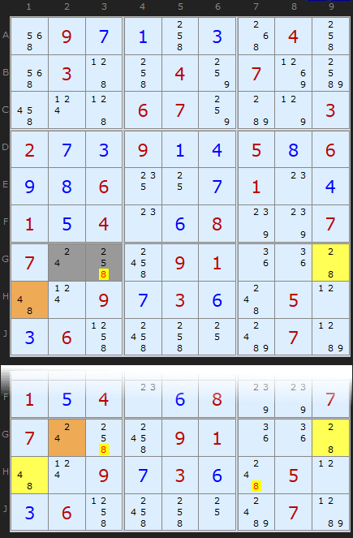
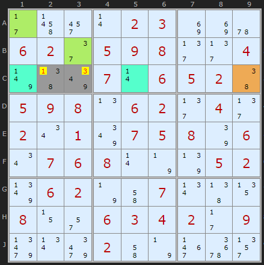
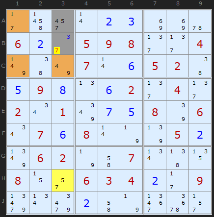
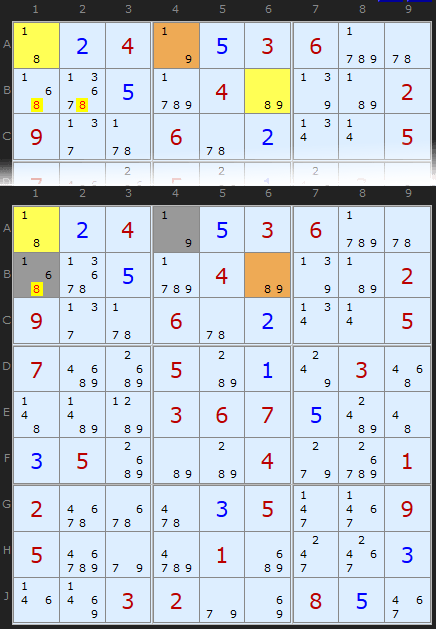
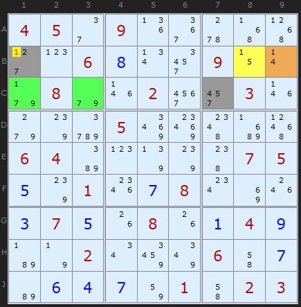
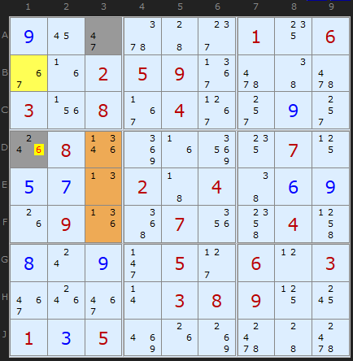
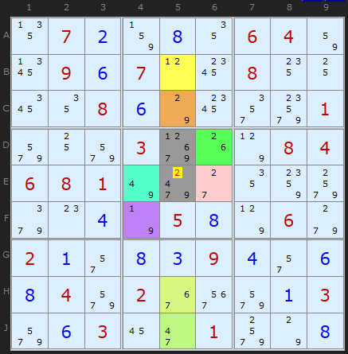

SudokuWiki.org
Strategies for Popular Number Puzzles
Aligned Pair Exclusion
This is an interesting strategy, known by the short-hand as APE and sometimes called Subset Exclusion. It can overlap with Y-Wings, XYZ-Wings and WXYZ-Wings but uses very different logic. The overlap is not strict so they are worth looking out for in a tough situation.
There is always a base pair of cells (which now show up as grey cell on the solver). At least one elimination will occur in one of those two cells. The solver will also show a variety of colored cells which are the elements used to make an elimination. I used to distinguish between APE type 1 which only used bi-value cells and type 2 which used 2-cell Almost Locked Sets (ALSs). But the solver will now find a larger variety including 3-cell ALSs and since these merely extend the same logic the solver will return the first of any it finds. A better Type 1 and Type 2 distinction is between the base pair of cells which can be a locked pair (ie can see each other) or not (can't see each other). The logic is subtly different but I'll come to this in the following examples.
There is always a base pair of cells (which now show up as grey cell on the solver). At least one elimination will occur in one of those two cells. The solver will also show a variety of colored cells which are the elements used to make an elimination. I used to distinguish between APE type 1 which only used bi-value cells and type 2 which used 2-cell Almost Locked Sets (ALSs). But the solver will now find a larger variety including 3-cell ALSs and since these merely extend the same logic the solver will return the first of any it finds. A better Type 1 and Type 2 distinction is between the base pair of cells which can be a locked pair (ie can see each other) or not (can't see each other). The logic is subtly different but I'll come to this in the following examples.
Aligned Pair Exclusion - Type 1

(requires Y-Wing unchecked)" />(requires Y-Wing unchecked) : Load Example or : From the Start
The Aligned Pair Exclusion can be succinctly stated: Any two cells that can see each other CANNOT contain a pair of numbers that will empty a cell in an Almost Locked Set they both entirely see.
Remember - a bi-value cell (with two candidates) is the simplest Almost Locked Set since it is a set of size '1' with size+1 (ie two) candidates.
Let's consider the simplest possible example - two bi-value cell attacking the pair. I have also shown the Y-Wing in the diagram so we can see there is a simpler way to do the same job - but only in some cases.
We consider ALL the possible pairs of numbers that will fit in [G2/G3]. These are for G2 and G3:
2 and 5
2 and 8
4 and 2
4 and 5
4 and 8
Apart from the first being impossible (2 and 2) since G2 and G3 can see each other, we have problems with some of the other combinations. What if 2 and 8 were tried as the solutions? Well, that would duplicate and therefore empty G9. Also 4 and 8 would empty H1.
We are left with a set of combinations that looks like this:
2 and 2 (impossible)
2 and 5
2 and 8 (impossible)
4 and 2
4 and 5
4 and 8 (impossible)
Notice that we now have no 8 left in any pairing? Therefore we can remove 8 from our base pair. Voilà
Credits - Rod Hagglund first popularised this method. (links now dead).
2 and 5
4 and 2
4 and 5
Notice that we now have no 8 left in any pairing? Therefore we can remove 8 from our base pair. Voilà
Credits - Rod Hagglund first popularised this method. (links now dead).
Example 2

The 2-cell ALS in [A1,B3] contains {1/3/7} so pairs that would cripple the solution for that ALS are {1,3}, {1,7} and {3,7}.
Let's consider all the possible pairs of numbers in our base pair [C2/C3]. These are:
3 and 4
3 and 9
8 and 4
8 and 9
Now, we have to be a tiny bit careful here. 3 has definitely been excluded as a possible solution in C3 but look down the list and 3 + 4 is still OK and 3 + 9 is OK. So we can't remove 3 from C2 just yet.
Credits: Myth Jellies came up with the insight for abc = ab/ac/bc
Note: There could be more than two, sometimes three or four ALSs of several sizes in an APE attack. I've considered examples with two for simplicity's sake
Example 3

4 and 3
5 and 3
7 and 3
The tricky one with the 3-cell ALS is not the fact that the base pair will empty it (it can't since it is two cells and the ALS is 3 cells). It's the fact that a solution of 4 in A3 and 7 in B3 would mean there'd be only two candidates left to fill three cells. Thats enough to rule out the combination.
Aligned Pair Exclusion - Type 2
Aligned Pair Exclusion can also work even if the pair is not aligned. Sounds like a joke, but it's too late now to rename this strategy :) Perhaps 'Subset Exclusion' was a better idea. There is a subtle logical different but I have found many examples and it boosts the usefulness of this strategy.
I'm very grateful to Joseph Aleardi for putting me on the scent of this elegant logic.
I'm very grateful to Joseph Aleardi for putting me on the scent of this elegant logic.

The diagram here shows first the Y-Wing based on A1 - A4 (the pivot) - B6. It's quite easy to see that 8 must occur in either A1 or B6, thus removing it from B1 and B2.
But let's follow the APE logic with the non-aligned pair A4 and B1. (Note: We could also choose A1 and B2 and eliminate the 8 there also). A4 pairs with B1 using these combinations:
1 and 1 - POSSIBLE!
1 and 6
9 and 1
9 and 6
The only difference between APE 1 and APE 2 is that with non-aligned pairs the same candidate *could* be a solution in both cells. So 1 and 1 is definitely on the cards. Not that it is critical in this case. The other exclusions mean we can't have an 8 in B1, just as we thought.

Here is a more complex APE that does not have a Wing alternative. We have two bi-value cells and one two cell ALS attacking B1 and C7. Let's write out the combinations between those cells:
1 and 4 - excluded by B9
1 and 5 - excluded by B8
1 and 7 - excluded by [C1 + C3]
2 and 4
2 and 5
2 and 7
7 and 4
7 and 5
7 and 7 - Permitted!
Clearly 1 is removed from B1. The exact same formation also removes 1 from B2 (on the next step).

To conclude, a non-aligned pair using a bi-value cell and a 3-cell ALS. I'll leave it to the reader to work out why 6 can be removed from D1.
There is a second very nice APE later in the solving sequence using a 2-cell ALS and a 3-cell ALS. You can load the puzzle from the links under the diagram.
An Eight-Cell Aligned Pair

How many difficult puzzles did Klaus have to check to find this? Astonishingly, around 21 million!
Comments
Email addresses are never displayed, but they are required to confirm your comments. When you enter your name and email address, you'll be sent a link to confirm your comment. Line breaks and paragraphs are automatically converted - no need to use <p> or <br> tags.
... by: Visitor
The quintuple 1, 3, 4, 6 and 7 in B1, A3, D3, E3 and F3 forces F1 to be 2 since the 6 in F1 can be seen by all other 6s (in B1, D3 and F3).
But also here: It is not mentioned in the text, and it is not highlighted.
Can you please check?
... by: Visitor
Is there a reason why you do not highlight the 1 in B2 of which you write (in the last sentence) that it can be removed? I find it somehow irritating.
And, more important:
The quintuple 1, 4, 5, 7 and 9 in B8, B9, C1, C3 and C7 removes also 1 from C9 since it can be seen by all other 1s (in B8, B9 and C1).
But this is not mentioned in the text, and it is not highlighted.
Can you please check?
I'd have to deep dive into the code as to why it needs separate steps. Same with the quad. I think it is because it is only considering the individual ALSs and not combining them. I can add it to the job queue.
... by: Howard Weiss
Is C1 and C5 an AlmostLockedSet visible from C2 and C3? It seems to meet the definition of a locked pair (1,4) with an additional value (9 in C1)
Is so, C1+C5 knocks out the possible pair of numbers 1 and 9 from C2 C3. If C2 == 1 and C3 == 9, then both C1 and C5 are 4
you are right, the combination 1 and 9 is not possible.
There is no valid combination that contains 1, so the 1 in C2 can be removed and should therefore be highlighted in yellow also.
Andrew, can you please check?
... by: Pulsar
We can identify a 2-cell ALS {B5 C5} and a 4-cell ALS {D5 D6 E6 F4}. These two sets have a pair of restricted commons: 1 and 9. It is impossible for both sets to contain both digits, because within these sets they can only appear in the cells B5, C5, D5 and F4. These four cells cannot contain two 1's and two 9's, because the first three cells all see each other. Therefore, at least one ALS has to lose either a 1 or a 9 to become a locked set.
Now 2 becomes the 'pincer' digit: cell E5 can see all the 2's in both ALS's and can therefore not contain a 2; if it did, both ALS's would lose their 2's, but we already know that at least one ALS must lose a 1 or a 9, and an ALS can only lose 1 digit.
You can apply the same strategy with the 2-cell ALS {D6 E6} and the 4-cell ALS {B5 C5 D5 H5}. In this case, 6 and 7 are the restricted commons.
Two Almost Locked Sets with restricted commons appear to cover a wide variety of cases. I'd love to see if they encompass all forms of aligned pair exclusion.
... by: Robert
All of the examples, with the exception of the last, are cases of an AIC with almost locked sets. My own solver, which implements this without a size limitation on the ALS (the solver at this website seems to consider only ALSs with two cells and three values) does not solve the Klaus Brener 8-cell example; however, my cell-forcing implementation does.
I think there is another way to view this sort of strategy. There are a number of ALSs, and also some AALSs shown. The logic of an ALS in an AIC (described on another page is this) - if a chain turns a value in an ALS "off", by virtue of being weakly linked to something somewhere that has already been turned "on", then the other values in the ALS are all turned "on" - that is, the values in an ALS are strongly linked (but not weakly linked) to each other. Or, put another way, once a value is turned off, the ALS becomes a locked set, and the values in the locked set can be eliminated from other cells in the unit containing the ALS that was promoted to a locked set. The chain can then continue, and possibly allow us to draw an inference.
But this idea can be extended. Suppose you have an AALS - then two values need to be turned "off" in order to turn it into a locked set. This will happen quite a bit in a forcing net (the only significant strategy I have implemented in my own solver, that is not described in detail at this web site). However, it could even happen in an AIC - the chain could turn "off" some candidate in the AALS, then wander around for a while, and come back and turn off another candidate in the same AALS. Two is all that is needed - the AALS has now become a locked set, and the inference can continue.
I have been calling this a "dynamic locked set" - it isn't a locked set, but conditional on some assumption (an AIC or forcing net becomes simply by assuming some candidate is on or off), once all the implications of that assumption are considered, the "dynamic locked set", which might have had one, two, or even more values than a locked set would, magically becomes a locked set. And we can then turn "off" the remaining values in the dynamic locked set if they are found in other cells in the unit, and possibly continuing following the chain/net until it allows us to make some inference.
I have similarly implemented a forcing net with what I call "dynamic groups", "dynamic fish", and "dynamic finned fish". I tried "dynamic Y-wings" and "dynamic XYZ-wings", but in my small database of 245 advanced puzzles, but this resulted in exactly zero additional inference that the forcing net could not already make. In fact, I think among the strategies described at this web site in the "Basic", "Bent Set", "Strategies", and "Forcing Chains" sections, the only ones which are possibly not special cases of "forcing net with dynamic groups/fish/finned fish" are AIC with unique rectangles, and SK loops. Even the "exotic" strategies include some special cases - I'm not sure about pattern overly, but other than that and Franken Fish, all "exotic" strategies listed up to APE are special cases.
So I'd say you could view this one is a particular case of "forcing net with dynamic locked sets". That is meant in no way to denigrate this quite elegant strategy; I just think it can be generalised.
Franken fish is my next project :)
... by: giuseppe rizza
Best regards
Giuseppe Rizza
... by: pie314271
The only other thing that happens here is Hidden Singles, and on the step with the APE 4 different ALSs are used to eliminate a total of five candidates from the two grey cells, which is definitely really high.
... by: David Anez
* If A3 is 4, A4 solves to 1, which leads A1 to be solved as 7, which removes the 7 of B3
* If A3 is 5, H3 is solved as 7, which removes the 7 of B3
* If A3 is 7, directly removes the 7
The 7 in question is removed anyway by a second APE after the APE and Simple Colouring, but is removed because the combination 5/7 in A3/B3 would clear H3... which is part of my possible WXYZ-wing, together with A3.
Is there an assumption of WXYZ-wings that I have somehow missed?
... by: TAU
... by: rRcCV
But I would appreciate to get some help in understanding the last "Eight-Cell Aligned Pair" example.
As far as I can see eliminating candidate 2 from E5 just requires four of the eight cells:
B5, C5, D6 and E6.
And completing the exercise of checking all possible combinations in D5E5 against the impact of all the ALS highlighted in the diagram unveals a lot of other combinations as being impossible, but they are not enough to eliminate any candiates from either D5 or E5, since I#m left with the remaining combinations as follows:
1 7
2 4
6 9
7 9
9 7
So what's the benefit of taking EF4 and HJ5 into consideration?
I just don't see what makes the statement true that "Each cell is necessary to produce all the pairs used to cross reference..."
Thanks for any explanation.
... by: Anton Delprado
For example if we were excluding "3 and 5" then the first cell only has to see the cells in the ALS that can be 3 and the second cell only has to see the cells in the ALS that can be 5.
... by: LeProf
The following comments are offered, then, as a more general comment (one example), to challenge your process of explaining how one begins to apply advanced "strategies". It is communicated because those students and I using your clearly thoughtful and effort-intensive explanations find it possible, even so, to apply them, in largest part, only if the explained strategy is already understood beforehand/separately from the explanation you provide. It is offered in the spirit of good organizational practice—that it is better we be talkers (providing critical feedback, even if negative) than walkers (departing the organization without comment, when needs are not met).
First, note, in your pedagogy of advanced strategies, you *do* explain superbly how the pattern you choose to act upon leads to elimination of possible numbers in cells, based on the new method being applied—the examples are all, generally, excellently explained.
But, there is little or no explanation on how one engaging a puzzle at an advanced state of solving (that shows all possibles, and that is taken as far as preceding more basic techniques allow) can discern either that no other advanced strategy is better and actionable, or that the currently presented strategy, here APE, is present and actionable, and if several starting points are possible, how the specific one to act upon is chosen.
Hence, what we seek (elsewhere at present) are explanatory statements for various strategies, that indicate, for given points on the paths to a puzzle's solution, what patterns are to be looked for, among which frequencies of remaining numbers/number groups, to indicate the best advanced strategy to attempt to apply.
In APE Example 1, perhaps what is sought is as statement like, "After scanning the puzzle for… [patterns] and seeing none further—note that the apparent starting points for strategies P and Q in cells A and B are dead ends—it is then may be time to apply an Aligned Pair Exclusion. To see if this strategy is applicable, units with between 4 and 5 unsolved cells are examined for presence of 2 or more bi-value cells that can *see* the rest of the cells, and that *share candidates with them*. Of the possible starting points in Example 1, we choose row G and box GHJ123 because… and we focus on cells G2 and G3 because… " [Note, no mention at all, yet, of Almost Locked Sets of greater complexity than bi-value.]
A related point here is that a very broad and general statement of the strategy is likely most suitable at the end, where it can be readily understood, e.g., here, where the extension from bi-value to all other Almost Locked Sets can be explained without undue complexity.
Remarkably, we know that you have already thought through this logical, truly strategic decision-making—it is what your programming, in the solver, clearly already does, walking stepwise, in a particular order, through the strategies, deciding which to apply or dismiss, based on looked-for patterns. It is this very process of logic, of what to apply when in the course of a puzzle, and where (very specifically) to begin applying it within a puzzle matrix, at a given point of being solved, that is missing in the current "strategy" explanations.
Finally, we are aware that explaining "strategies" is not necessarily the same as explaining the process of developing an over-arching strategy of applying them, in orderly fashion to given situations. In this regard, I would say you have laid out an excellent list of *tactics*, and that what is yet missing is an adequate discussion of strategy—the way in which "battlefield" conditions are accessed in each situation, to decide which particular tactic best applies.
Hope this might be go some help. We will continue exploring and learning tactics, separately, and coming here to review your well-explained examples, and to sort on our own the best over-arching strategies to apply. Best wishes for this continuing, clearly dedicated and effort-intesive endeavour. LeProf
... by: ad.joe
------------------------------------
Maybe it's not easy to put this straight, but in fact there are eliminations in 2 boxes:
g k p | _ _ _ | Y Z _
_ _ _ | _ _ _ | _ _ _
_ _ X | _ _ _ | a b c
The "wings" are X=2#, Y=2*, Z=2+
Then XYZ eliminates 2 on the aligned cells abcgkp ...
(provided that these have "not much more than #*+ on it", so you have to "cross-check")
- Doesn't the APE-structure look like an xy-wing (y-wing)? Only the function does work backwards and there is no pivot necessary!!
So you could also call it a BACKWING or a BACKSWING!
- And of course, in an X-Sudoku the 2 aligned fields need not be in the same box
(as long as one of the two is on a diagonal).
... by: ad.joe
_ _ _ | g k p | y z _
_ _ _ | _ _ _ | _ _ _
_ _ _ | x _ _ | a b c
the "wings" xyz (x=2#, y=2*, z=2+) eliminate 2 on the aligned cells abcgkp
(of course also in box 2, not only in box 3)
- While seeing this structure we can say, the form looks the same as an xy-wing (y-wing) or an xyz-wing, but the function works backward.
So you could call it also a BACKWING or a BACKSWING
- And of course, in an X-Sudoku the aligned fields need not be in ONE box (as soon as one of the two is on a diagonal)
... by: ad.joe
-----------------------------------
First, it's not our job to solve one of the examples in another way. But it's nice that all is so understandable.
(Matt, I'd add three words: duplicate the contents of any "ONE of the" two-candidate cells they both see. )
So, as we look for the third cell of an xy-wing (having seen two "similar" ones at first), what can we do here:
Let's solve it by cross-checking: We assume that the most FREQUENT number of the bivalue cells can be eliminated in the two cells in question.
We assume this number being correct there and quickly end in error, quicker than in looking up all combinations.
(Who'd think that we would not score more than 90 percent, he/she can feel free to try with the other numbers)
... by: Anon
... by: Phil Gooda
A B C
D E F
G H I ..... which means that my C is the X mentioned, and my F is the Y mentioned.
Cells B, C and G contain 3 numbers and only 3 numbers between them. Therefore those 3 numbers cannot appear in the other cells. Which immediately gives you the paired 5/9 in F and I, which means that E has to be 4. Why bother doing all the APE stuff?
... by: Patrick Barnaby
... by: Matt Lala
The rule you have says:
Any two cells aligned on a row or column within the same box CANNOT duplicate the contents of any two-candidate cell they both see.
If I take that literally in the first example... X in the first example can see the bivalues 25 and 37. It cannot duplicate the contents of those cells. Therefore... it can't be 2,5,3 or 7? Obviously that's not what was meant.
Or is it... if the two aligned cells see some bivalue cells, and they both mutually share a certain candidate [that's part of those bivalue cells] then that shared candidate can go? But no, that's not it either.
If either if the cells see two bivalue cells, and those two bivalue cells both share a candidate with the cell under consideration... that shared one goes?
Does one actually have to enumerate the possibilities? This seems like something that can be spotted with a glance, if only it can be made clear the exact conditions needed.
... by: Bernard Gervais
for example 1, I use the unicity concept which pinpoints A4 = 1.
Best regards.